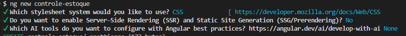

Angular
1. O que é Angular?
Angular é um framework front-end desenvolvido pelo Google para criação de aplicações web modernas.
Ele permite construir interfaces dinâmicas, organizadas e escaláveis.
Frameworks e Bibliotecas
2. O que é um framework?
Um framework define uma estrutura completa para o desenvolvimento.
- Define regras
- Define arquitetura
- Controla o fluxo da aplicação
3. O que é uma biblioteca?
Uma biblioteca é um conjunto de funções que você pode usar quando quiser.
- Você controla o fluxo
- Usa apenas quando precisa
4. Diferença entre framework e biblioteca
| Framework | Biblioteca |
|---|---|
| Controla o fluxo | Você controla o fluxo |
| Estrutura completa | Funções isoladas |
| Ex: Angular | Ex: Lodash |
5. Por que Angular é um framework?
- Define estrutura de pastas
- Define como criar componentes
- Controla navegação
- Possui injeção de dependência
Objetivos do Angular
- Criar aplicações escaláveis
- Organizar código
- Facilitar manutenção
- Separar responsabilidades
SPA - Single Page Application
Uma SPA é uma aplicação que carrega uma única página HTML e atualiza apenas o conteúdo.
- Mais rápida
- Melhor experiência do usuário
- Sem recarregar a página
Anatomia de uma aplicação Angular
- Modules
- Components
- Services
- Routing
Passo a Passo: Criando projeto Angular
Passo 0 — Criar o repositório e a branch no GitHub
- Crie o repositório no GitHub chamado projeto-angular-step clicando no botão "Create repository"
- Adicione um arquivo .gitignore e um README conforme aparece na etapa de criação de repositório no github
- Acesse o repositório no GitHub
- Clique em 1 branch
- Clique em New Branch
- No campo New branch name digite aula1-angular
- No campo Source escolha main
- Clique em Create branch
- Abra o VSCode, abra o terminal e digite
cd C:/
git clone https://github.com/SEU USUARIO AQUI/projeto-angular-step.git
cd projeto-angular-step
git fetch
git checkout aula1-angular
Passo 1 — Instalar Angular CLI
npm install -g @angular/cli
Passo 2 — Criar o projeto
Vamos criar o projeto que utilizaremos no decorrer das aulas
ng new minha-aplicacao-angular
Escolha as opções abaixo:

Passo 3 — Rodar o projeto
Agora digite os seguintes comandos
cd minha-aplicacao-angular
ng serve
Acesse no navegador:
http://localhost:4200
Verá que o angular já fez uma página introdutória. Toda vez que você fizer alterações no código, o servidor será atualizado automaticamente e mostrará nesse endereço localhost:4200 as mudanças em tempo real.
Passo 4 — Observar o projeto
O que é um componente?
É a unidade básica da interface no Angular.
- Template (HTML)
- Estilo (CSS)
- Lógica (TypeScript)
Vá para o arquivo app.ts:
@Component({
selector: 'app-root',
imports: [RouterOutlet],
templateUrl: './app.html',
styleUrl: './app.css'
})
export class App {
protected readonly title = signal('controle-estoque');
}
Observe que existem três partes principais:
- selector: nome do componente
- imports: módulos importados (falaremos mais adiante sobre)
- templateUrl: HTML do componente
- styleUrl: CSS do componente
Agora, abra o arquivo app.html
Perceba que dentro desse HTMl estão todos os elementos que compõem a interface do componente. Sendo estes os elementos presentes quando acessamos http://localhost:4200
Em seguida, observe que o arquivo app.css é o arquivo de estilo do componente. Para quaisquer classes, id ou elementos que queira estilizar que estejam dentro do app.html devem ser declarados nele
Por fim, observe o arquivo app.ts para ver a lógica do
componente.
No app.ts podemos declarar quaisquer funções que manipulem os dados do componente assim como variáveis que serão utilizadas no template (html), tal como o script JS faz com arquivos HTML, porém no nosso caso usaremos o TypeScript
Passo 5 - Criando outro componente
Pare o processo de rodar o ng serve apertando a tecla
CTRL + C duas vezes
Agora digite o código abaixo:
ng g c exemplo
Entre no arquivo exemplo.ts e insira o código abaixo
nele:
Perceba que nós criamos a variável nome e a função mudarNome() que altera o valor da variável nome, e que será chamada no template (html) do componente, que vamos inserir
import { Component } from '@angular/core';
@Component({
selector: 'app-exemplo',
imports: [],
templateUrl: './exemplo.html',
styleUrl: './exemplo.css',
})
export class Exemplo {
nome = "Fabio";
mudarNome() {
this.nome = "Angular Dev";
}
}
Agora acesse o arquivo exemplo.html e insira o código
abaixo:
<h1>{{ nome }}</h1>
<button (click)="mudarNome()">Alterar</button>
Veja que estamos utilizando a sintaxe de interpolação do Angular
{{variável}} para exibir o valor da variável nome no
template. Além disso, também estamos utilizando a sintaxe de evento do
Angular (click) para chamar a função mudarNome() quando o
botão for clicado.
Passo 6 - Inserindo o componente no template principal
Agora, para que o componente exemplo seja exibido na página principal,
precisamos inseri-lo no template do componente raiz (app.html). Para
isso entre no arquivo app.ts, remova todo o código que
está lá e insira o código abaixo:
Entre em app.ts e insira o código abaixo na parte de
imports.
import { Component, signal } from '@angular/core';
import { Exemplo } from './exemplo/exemplo';
@Component({
selector: 'app-root',
imports: [Exemplo],
templateUrl: './app.html',
styleUrl: './app.css',
})
export class App {
protected readonly title = signal('minha-aplicacao-angular');
}
Perceba que toda vez que criarmos um componente, precisamos importá-lo
no arquivo principal da aplicação caso queiramos usá-lo dentro do
template do app.html
Após importar o componente, precisamos adicioná-lo ao template do
componente raiz. Para isso, insira o código abaixo no arquivo
app.html:
<app-exemplo></app-exemplo>
Passo 7 - Testando o componente
Agora digite o código abaixo:
ng s
Logo, assim percebemos que um componente pode ter outro dentro dele, no nosso caso temos o componente raiz (app.html) e o componente exemplo dentro dele, e isso é o que chamamos de hierarquia de componentes, onde um componente pode conter outros componentes dentro dele, e esses componentes podem conter outros componentes dentro deles, e assim por diante, formando uma hierarquia de componentes.
Último Passo - Subindo para o Git
Agora vamos subir as alterações para o repositório do Git. Logo, execute os comandos abaixo:
git add .
git commit -m "aula 1 angular fundamentos"
git push
Dever de Casa
Criar um componente
Crie um componente com nome painel-adm
Obs: Não se esqueça de subir as alterações para o Git na branch dessa aula após terminar o dever